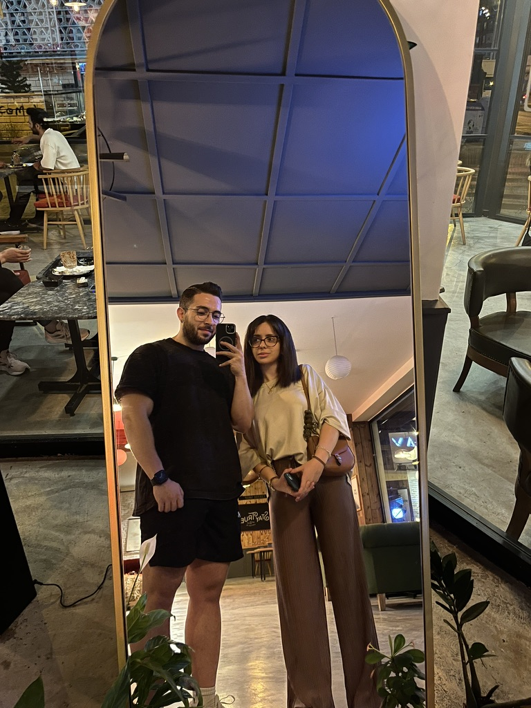
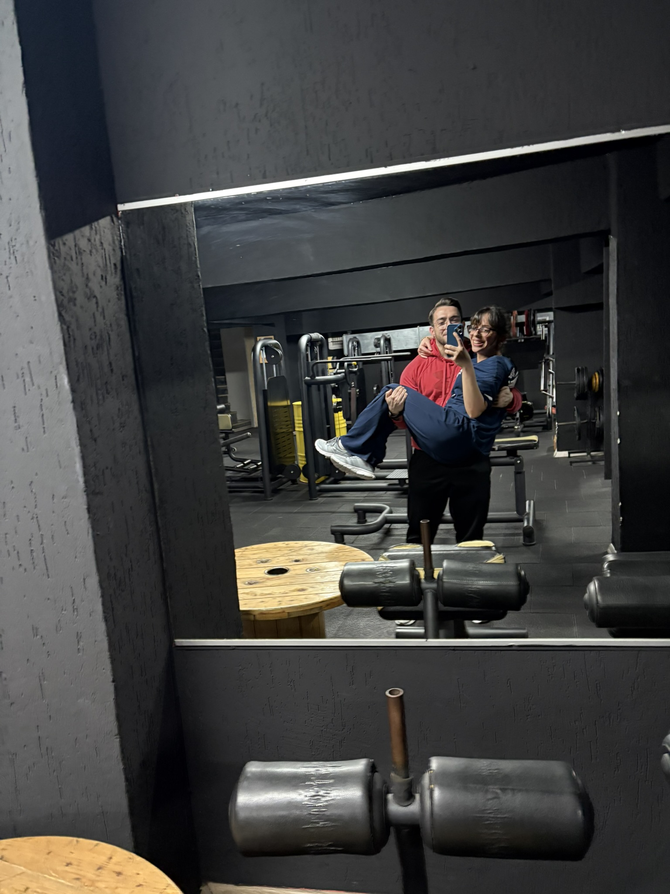

Sen Geldin.
Ve hayatımın en güzel tesadüflerinden biri oldun.
Ve hayatımın en güzel tesadüflerinden biri oldun.

Kahkahalar, yolculuklar, küçük tartışmalar... Hepsi bugün baktığımda en sevdiğim anılar olmuş.

Sana kelimelerle anlatamayacağım kadar teşekkür etmek istiyorum. Hayatıma dokunuşun, bana verdiğin güç ve her zaman yanımda oluşun paha biçilemez. Seninle geçen her an, zamanın durduğu ve sadece bizim olduğumuz anlara dönüşüyor. İyi ki varsın, iyi ki hayatımdasın. Bu yolculukta seninle olmak, her zorluğu kolaylaştırıyor ve her mutluluğu katlıyor. Seni çok seviyorum ve nice güzel anılar biriktirmek için sabırsızlanıyorum.